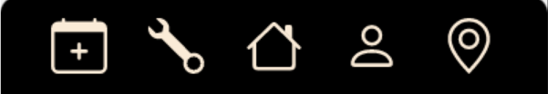
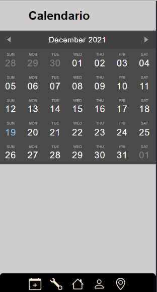
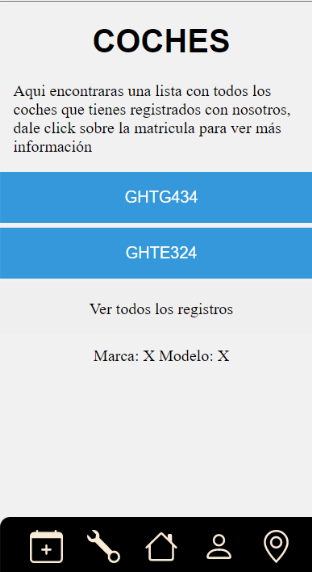
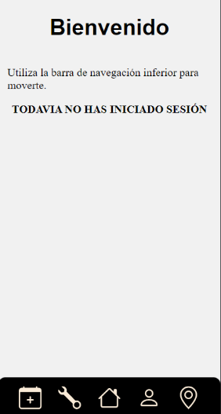
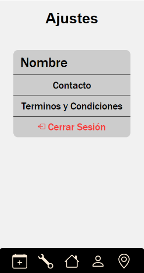
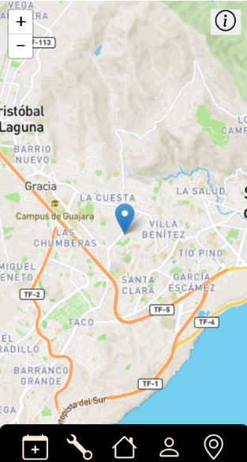

Para navegar por esta aplicación se utiliza una barra inferior con iconos para las opciones, cada opción puede ser fácilmente relacionada con un icono.
De izquierda a derecha los iconos:
- Acceso a un calendario, donde están los días importantes.
- Información de los coches, mostrados en lista con la matríclia.
- Botón para ir al inicio.
- Configuración de usuario.
- Mapa, con información sobre la localización del taller.
Calendario
Calendario en el que puedes ver fechas importantes, en futuras actualizaciones se podrá pedir cita desde esta pestaña.
Coches
En esta ventana tienes acceso a una lista de coches, que son mostrados por la matrícula.
Inicio
Está es la pantalla principal de la aplicación, pueden aparecer noticias o alertas.
Usuario
Se puede cerrar la sesión, acceder a las políticas de privacidad y contactar con el taller.
Mapa
Mapa situado en la dirección del taller marcado en el mapa sin precisar de tu localización GPS.
